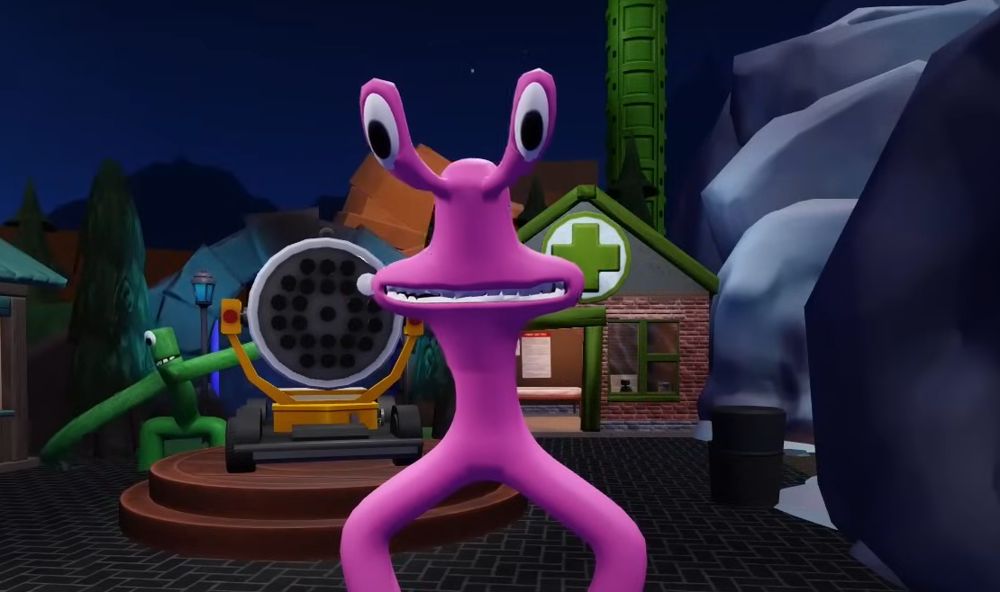
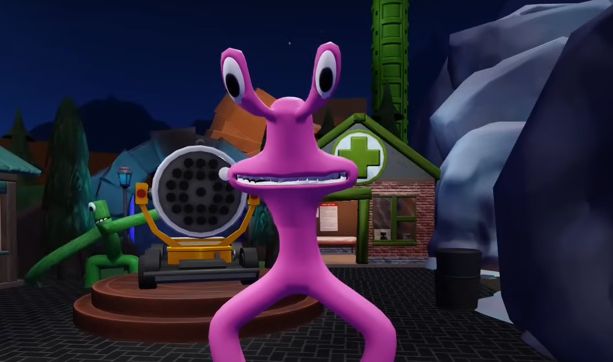

Ри́би — парафілетична група водних хребетних тварин, зазвичай холоднокровних із вкритим лусками тілом та зябрами, наявними протягом всього життя. Активно рухаються за допомогою плавців або руху всього тіла.
 
